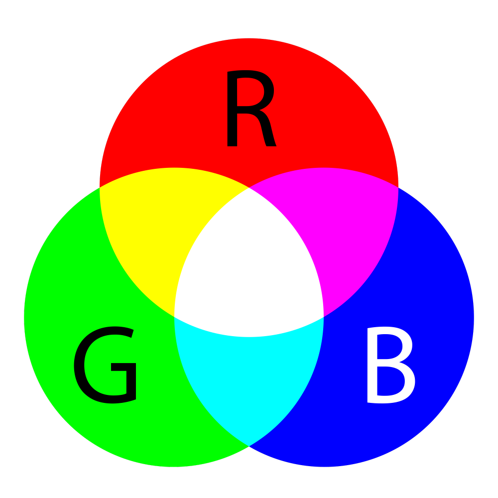

Je hebt vast wel eens gehoord van de term resolutie, maar wat houdt dat nou eigenlijk in? De resolutie is het aantal pixels wat een copmuter heeft, maar die pixels, waar dienen die voor? Pixels zijn hele kleine lampjes in een computer die 3 verschillende kleuren aan kunnen nemen: Red, blue of green (rood, groen of blauw natuurlijk).Het kan ook zijn dat alle lampjes uit staan en dan heb je natuurlijk zwart. Deze 3 verschillende kleuren kunnen altijd verschillen in helderheid. Als het rode lampje bijvoorbeel helemaal aan staat en de blauwe en de groene uit, dan geeft de pixel een rode kleur weer.
Er is een manier in de binaire taal hoe je weet hoe veel zo'n lampje schijnt. Dit doen ze met de cijfers 0 tot en met 255. Een pixel heeft 8 bits, de maximale code wat zo een bit aan kan geven is 11111111, 8x de 1. Hier staat dus het cijfer 255 en dit is het maximale cijfer wat een byte kan hebben. Minimum cijfer is dus 0 en maximum cijfer is dus 255.
Het RGB model werkt dus op een basis van zwart omdat als de lampjes uit staan je een zwarte monitor of zwarte display hebt. Maar wat als je een foto vanuit je computer wilt printen, wat altijd op wit papier gebeurd? Daarvoor gebruiken we een ander model genaamd het CMY model.